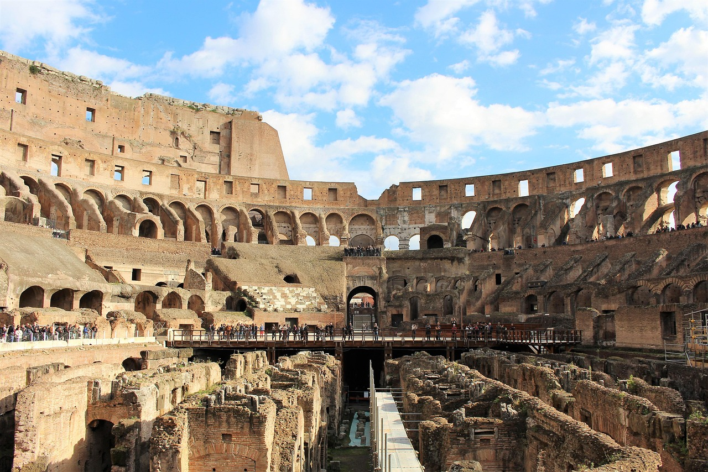

Il Colosseo è uno dei monumenti più iconici di Roma, originariamente conosciuto come Anfiteatro Flavio, ed era il più grande anfiteatro romano del mondo. La costruzione dell'anfiteatro iniziò sotto Vespasiano intorno al 70 d.C. e fu conclusa da Tito, che lo inaugurò nell'80 d.C. La sua funzione era quella di intrattenere il popolo romano, infatti i posti a sedere sono stimati tra 50.000 e 87.000. Al suo interno avevano luogo scontri mortali fra gladiatori, spettacoli di caccia e spettacoli basati sulla mitologia classica. Si ritiene inoltre che durante le prime fasi della sua storia potessero essere organizzate anche battaglie navali, anche se questo aspetto è ancora oggetto di discussione. L'anfiteatro cadde progressivamente in disuso dopo il VI secolo e la struttura venne riutilizzata nei secoli successivi anche come cava di materiale.
